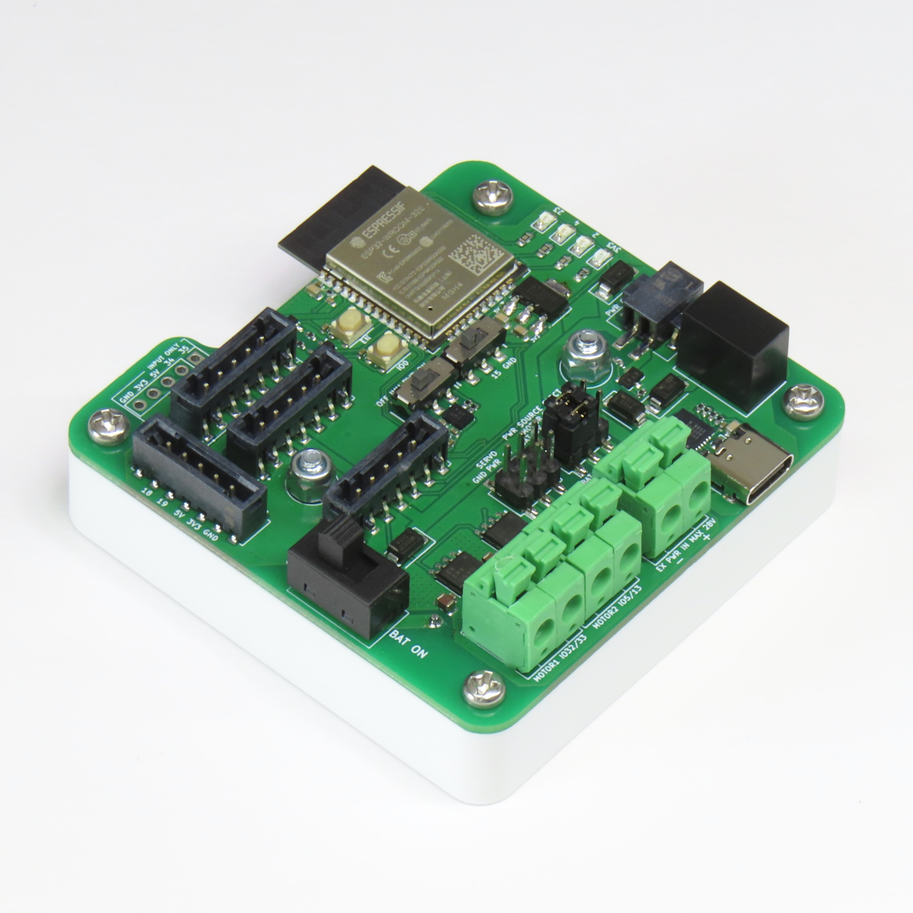
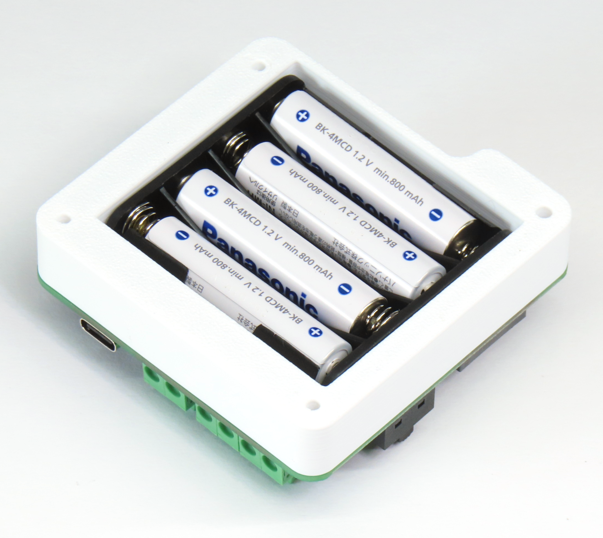

UGOKU One
概要
UGOKU One はモータやセンサを使ったロボットなどのDIY製作物を少しでも手軽に操作することを目的に開発しているオープンソースハードウェアの汎用基板です。
- 単四電池ボックス搭載で単四電池4本でDCモーターやRCサーボをの駆動が可能
- Arduinoで開発可能なESP32マイコン搭載
- DCモータドライバ（TB67H450FNG）を2個搭載
- 豊富な汎用IOポートでいろんな拡張が可能
- 圧着工具を使用せずにモーターやセンサーの配線が可能
ハードウェア
GitHub Hardware Repository主要構成部品
| マイコン | ESP32-WROOM-32E |
|---|---|
| DCモータドライバ | 2x TB67H450FNG |
| IMU | BMI270 |


ライセンス

この デバイス は クリエイティブ・コモンズ 表示 4.0 国際 ライセンス の下に提供されています。